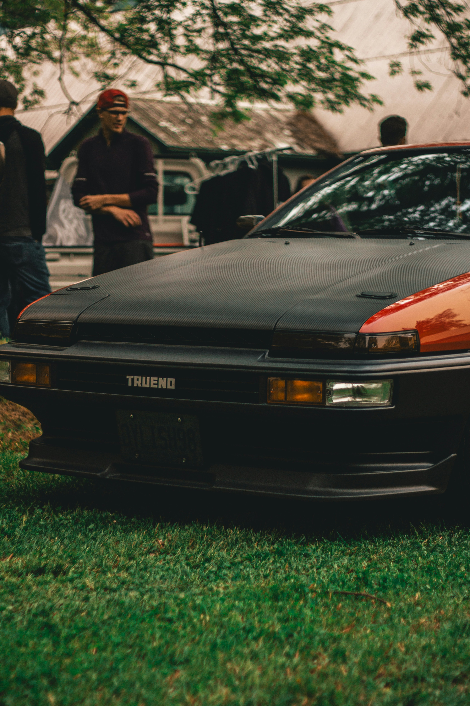

stands for "Japanese Domestic Market," referring to vehicles and parts designed and intended for the Japanese market only. While the term technically refers to vehicles sold within Japan, it has expanded to encompass a broader culture and aesthetic that embraces performance, styling, and ingenuity, resonating far beyond Japanese borders. JDM cars are highly regarded for their engineering, design, and the strong culture built around them, with many enthusiasts and collectors seeking out these vehicles and parts for their unique characteristics.
